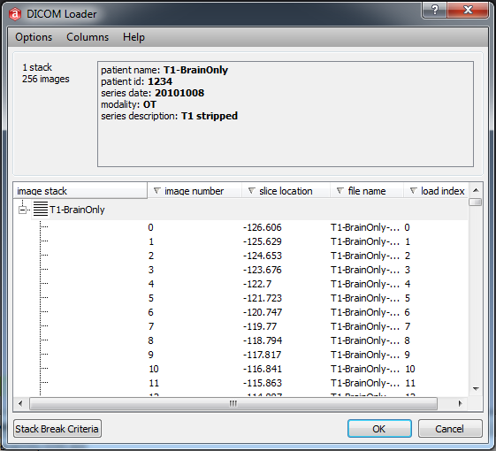
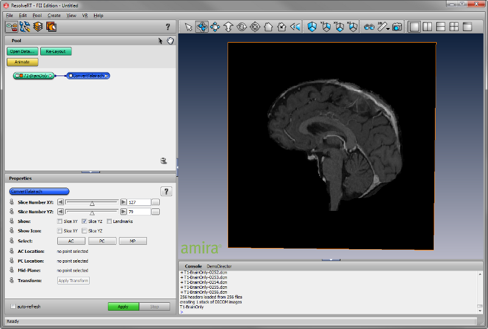
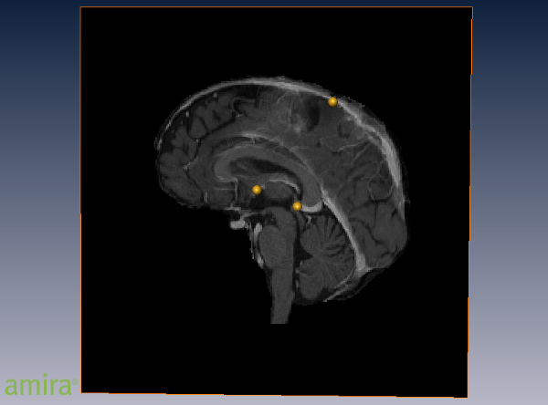
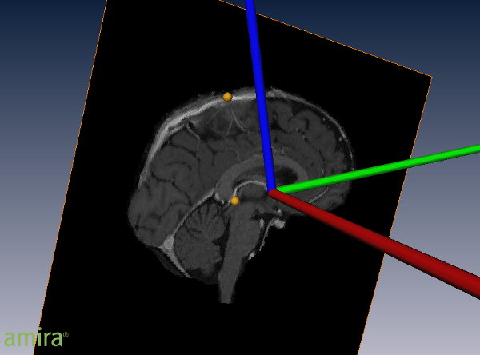
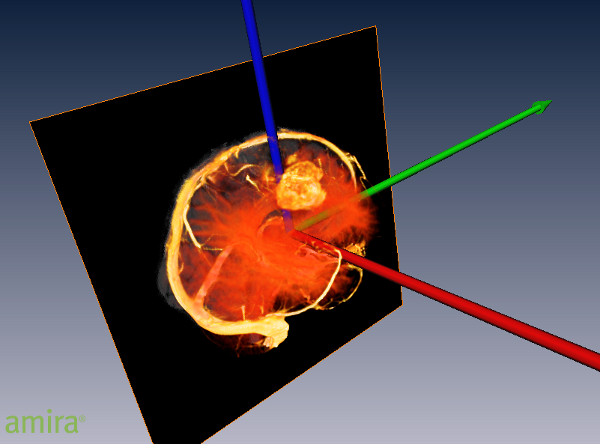

In brain research it is often desired to describe the locations of brain
structures independent from individual differences in the size and overall shape of the brain.
In the Talairach coordinate system the anterior commissure and posterior commissure lie on a
straight line along the y-axis. This coordinate system is completely defined by requiring the
midsagittal plane to be vertical and the superior part of the brain having positive Z values.
When specifiying a location in the structure in 3D space, the anterior commissure is used as a
reference point and origin of the coordinate system. The transformation of brain data into
Talairach coordinates simplifies registration and spatial warping of image data from the brain.
The tutorial will cover the following topics:
- Load DICOM image data
- Browse through brain data using the sagittal plane
- Position landmarks on anterior and posterior commissure and on the superior part of the midsagittal plane
- Visualize landmark positioning
- Perform the transformation
- Resample transformed image data
- Click on Open Data... and navigate to /data/tutorials/DTI/T1-BrainOnly.
- Select all files in the T1-BrainOnly folder and click on Load.
- Start the data loading by pressing OK in the DICOM Loader dialog.

Figure 150:
DICOM Loader dialog showing the image parameters extracted from the DICOM header of each
individual file. By default, the dialog shows the image number, slice location, file name, and the load index.
- Verify that the data has no unapplied transformations by making sure that the data object icon uses a non-italic font.
- Remove unapplied transformations before proceeding:
- Select data object and open Transform Editor from the Properties area of the data object.
- Click on the All button in the Reset port.
- Close the Transform Editor.
- Once the data is completely loaded into the Pool, right-click on the icon labeled T1-BrainOnly
and select Compute->ConvertTalairach.
- Select the module ConvertTalairach from the Pool to show the properties of the script object.
- The slider in the Slice Number port lets you browse through the yz-slices as visualized in the 3D viewer
- Alternatively, in interactive mode, you can pick the rendered slice and move it with the mouse to the desired
location.

Figure 151:
Amira main window with the brain data loaded and visualized using the ConvertTalairach script object.
The Properties area shows the ports of the selected ConvertTalairach module, and the 3D Viewer visualizes
the selected yz-slice.
- Using the Slice Number port position the yz-slice to show the anterior commissure.
- If not done already, switch the 3D Viewer into interactive mode.
- Click on the button labelled AC followed by a click on the anterior commissure in the yz-slice.
- Using the Slice Number port position the yz-slice to show the posterior commissure.
- Click on the button labelled PC followed by a click on the posterior commissure in the yz-slice.
- Using the Slice Number port position the yz-slice to show a slice through the center of the superior midsagittal sinus.
- Click on the button labelled MP followed by a click on the superior midsagittal sinus in the yz-slice.
- The selected locations will be shown in the Properties area of the ConvertTalairach script object.
- Visualization of landmark locations for the anterior and posterior commissure or superior midsagittal plane is enabled by checking the
Landmarks option in the Show port. Here, the visualization of the Slice can also be controlled.
- When enabled, the position of the landmarks is indicated by three golden spheres.
- If unsatisfied with one of the positions, just switch the 3D Viewer into interactive mode.
- Click on one of the landmark buttons in the Select port of the Convert Talairach Properties and make a new
selection on the slices through the brain.

Figure 152:
Rendering of a yz-slice through the brain with the selected landmark locations indicated by three golden spheres.
- Transformation into Talairach Coordinates is initiated by a click on the green Apply button of ConvertTalairach.
- The success of the transformation can be verified by enabling the global axis in the Amira topmenu; select View->Axis.
- The sphere for the anterior commissure should be located at the origin of the coordinate system.
- The sphere for the posterior commissure should be located on the negative y-axis (green axis).
- The sphere in the superior midsagittal sinus, should be located on the positive yz-plane (blue/green axis).

Figure 153:
Rendering of the selected landmarks with the global axis after transformation in front of a yz-slice through the brain. The axes in x-, y-,
and z-direction are indicated by red, green, and blue colors, respectively.
- Once satisfied with the result, you can apply the transformation and resample data by pressing the Apply Transform button
in the Properties area of ConvertTalairach.
- The resampled data will appear in the Pool with the ending .transformed.
- It can be visualized with an OrthoSlice or Volren module for verification.

Figure 154:
Rendering of the transformed and resampled data set using an OrthoSlice to indicate the midsagittal plane and a
Volren for global orientation.
{kind=link}
{kind=link}
{kind=link}
{kind=link}
{kind=link}